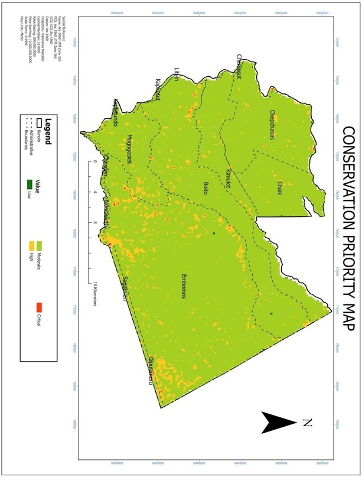
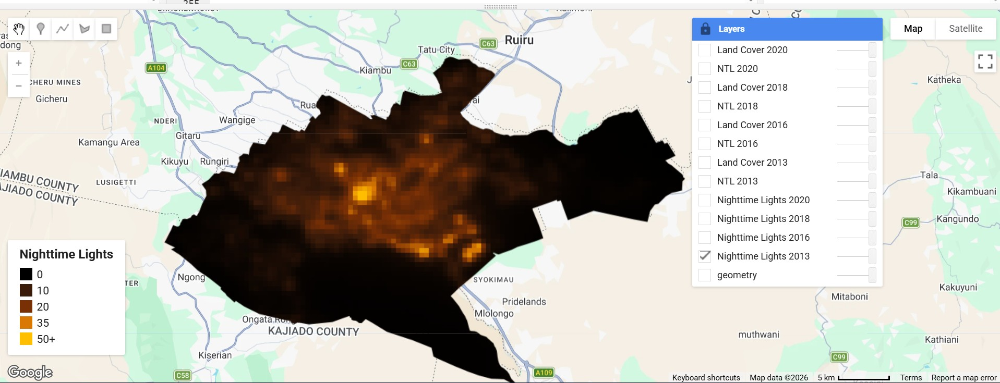
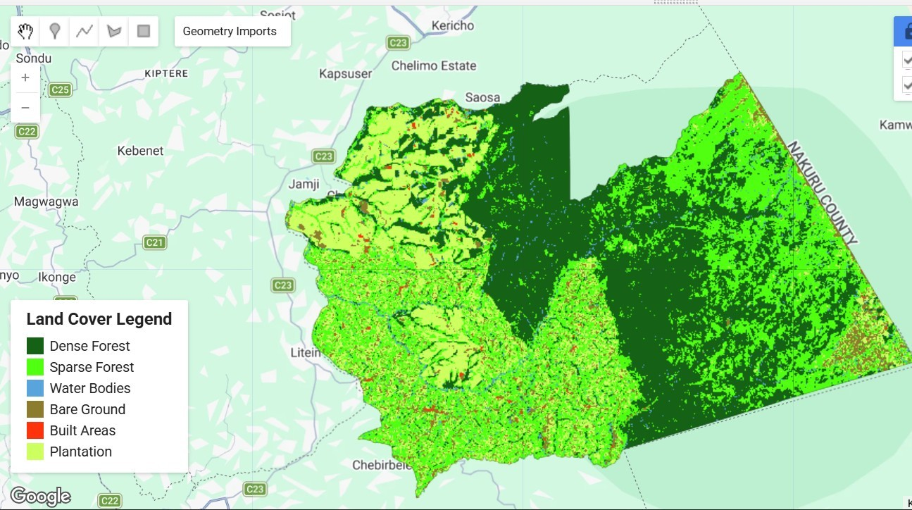

Hello, I'm
Wycliff Gakenge
Geospatial Engineer
I build data-driven geospatial solutions that transform satellite imagery, spatial databases, and field-collected information into actionable insights for environmental management, sustainable development, and evidence-based decision making.
Transforming Spatial Data into Intelligent Decision Support
I combine Geographic Information Systems, Remote Sensing, Python programming, Machine Learning, and Spatial Databases to develop solutions that help governments, researchers, organizations, and communities make informed environmental and infrastructure decisions.
Passionate About Mapping Our World Through Data
I am a Geospatial Engineer with a strong background in GIS, Remote Sensing, Surveying, Python Development, and Spatial Data Analysis. My work focuses on transforming complex geospatial datasets into meaningful insights that support environmental sustainability, research, and evidence-based planning.
Building Better Decisions Through Geospatial Intelligence
My professional journey began at the University of Nairobi where I developed a strong foundation in Geospatial Engineering. Since then, I have gained practical experience in cadastral surveying, GIS analysis, customer support, and research, allowing me to combine technical expertise with strong communication and problem-solving skills.
My long-term goal is to specialize in Geospatial AI, Earth Observation, Environmental Analytics, Cloud GIS, Backend Engineering, and Machine Learning to build intelligent spatial systems that address real-world challenges.
Career Journey
University of Nairobi
BSc. Geospatial Engineering
Industrial Attachment
Field Survey & GIS
Ministry of Lands
Cadastral Surveys
CCI Kenya
Technical Customer Support
Current Goals
Geospatial AI & Backend Engineering
0
Projects
0
Years Experience
0
Certifications
0
Technologies
Technical Expertise
My toolkit spans geospatial engineering, software development, spatial databases, remote sensing and data science.
GIS & Geospatial
Programming
Data Science
Databases
Professional Skills
Currently Exploring
Featured Projects
A selection of geospatial, software development, and research projects demonstrating my technical skills and problem-solving approach.

GIS & Remote Sensing-Based Analysis of Deforestation-Driven Soil Erosion
Undergraduate research investigating the impact of deforestation on soil erosion using GIS, Remote Sensing, RUSLE modelling and Earth Observation data.

Urbanization Monitoring Using GIS, Remote Sensing & Nighttime Lights
Remote sensing project assessing urban growth in Nairobi through the integration of VIIRS Nighttime Lights and MODIS Land Cover datasets within Google Earth Engine. The study leverages nighttime light intensity as a proxy for urbanization to map spatial expansion, and evaluate temporal changes in development between multiple years. The workflow combines cloud-based geospatial processing, spatial analysis, and data visualization to support sustainable urban planning and environmental monitoring.

Land Surveying & Boundary Mapping
Boundary re-establishment, cadastral surveys and mapping using GNSS observations and survey workflows.

Spatial Database Design
Designing efficient spatial databases for storing, querying and managing geospatial datasets.

Python Geospatial Analysis
Automating spatial analysis and data processing using Python libraries including GeoPandas, Rasterio, NumPy and Pandas.

Machine Learning for Spatial Data
Exploring machine learning techniques for environmental monitoring and predictive spatial analytics.
Interactive Project Map
Explore selected project locations and areas of interest.
Professional Journey
University of Nairobi
2020 – 2025Bachelor of Science in Geospatial Engineering. Built a strong foundation in GIS, surveying, remote sensing, photogrammetry and spatial analysis.
Industrial Attachment
TrainingPractical field experience in survey operations, GIS workflows, data collection and mapping.
Ministry of Lands
InternWorked on cadastral surveys, fixed boundary surveys, GNSS data collection, AutoCAD drafting and GIS data processing.
CCI Kenya
Customer Support RepresentativeDelivered technical support, resolved customer issues, documented cases and strengthened communication and troubleshooting skills.
Current Focus
2026Building geospatial software, expanding backend development skills, and exploring machine learning for Earth observation and environmental analytics.
Featured Research
Undergraduate research focused on environmental monitoring, GIS, remote sensing and sustainable land management.

GIS & Remote Sensing-Based Analysis of Deforestation-Driven Soil Erosion
This research investigates how deforestation influences soil erosion using satellite imagery, GIS analysis and the RUSLE model.
- ✔ Landsat & Sentinel Imagery
- ✔ Google Earth Engine
- ✔ ArcGIS Pro
- ✔ Python
- ✔ Environmental Analytics
Professional Development
Harvard CS50 Web Development
Harvard University
Python for Data Science
Coursera
Software Development with Python And Database Design
Power Learn Project
Spatial Data Science
Coursera
Certified Space Professional
Certification
Global Mentorship Initiative
GMI
Let's Work Together
Feel free to reach out regarding projects, collaborations or career opportunities.